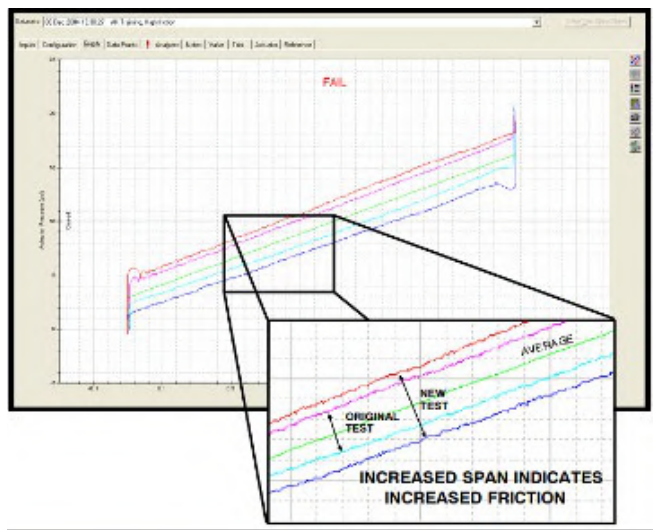

The Signature Data Comparison Overlay

- 1Original Test — the factory-baseline signature trace
- 2New Test — the current, in-service signature trace
- 3Increased span indicates increased friction — the widened gap between the two traces is the diagnostic signal, not a single number
After Control Valve Handbook, 6th ed., Fig. 2.9 — used directly, own printed callouts retained per Style Guide Sec 6.2/6.3 (no added markers). Component Index: cvh-cmp-signature-data-comparison-overlay.